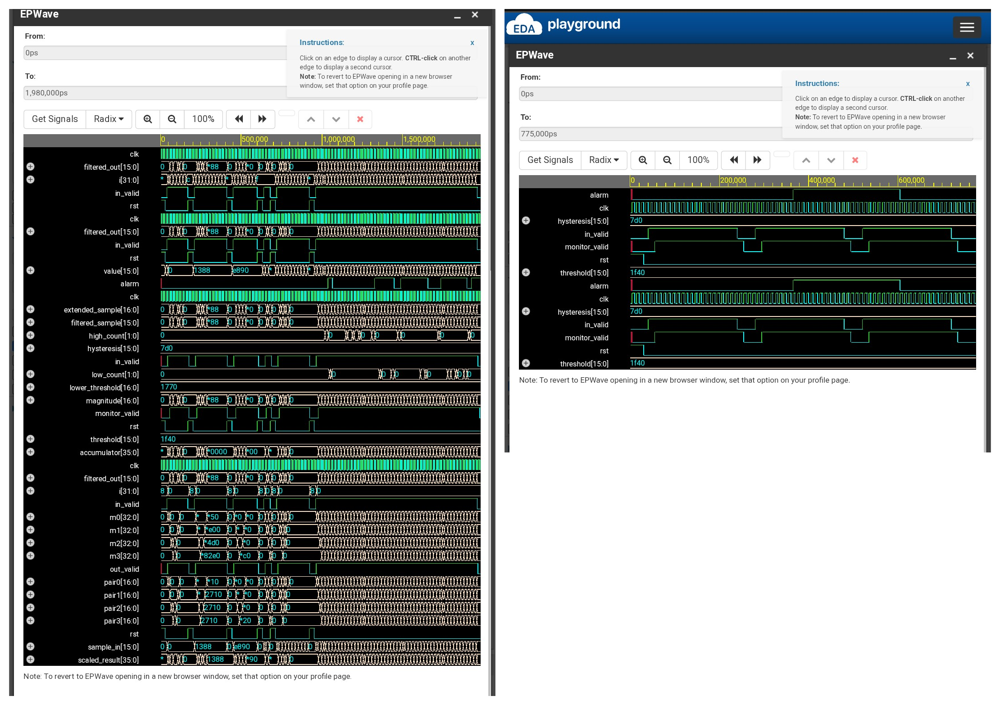

STAGE 01IN
Sensor input
Signed digital sample enters the processing chain.
SAMPLE STREAM →
A fixed-point DSP subsystem exploring how sensor signals can be conditioned, filtered and monitored through Verilog RTL.
AeroDSP-X brings together a symmetric FIR filter and a vibration-monitoring block in a compact RTL subsystem.
The project explores a digital signal path inspired by aerospace sensing: condition a stream of samples, evaluate signal magnitude, and raise an event flag when a sustained threshold condition is detected.
Each block has a defined role in the data path, from sample arrival to event indication.
Signed digital sample enters the processing chain.
Symmetric coefficients condition the incoming sample stream.
Magnitude, programmable threshold and hysteresis are evaluated.
Event indication follows sustained high/low sample conditions.
Generate a conceptual noisy sensor signal and compare it with the output of the project's normalized 8-tap FIR coefficient set.
This interactive plot is a conceptual visualization calculated in your browser using the documented coefficient values. It is not a replacement for the HDL testbench or EPWave waveform evidence.
Key implementation concepts represented in the RTL project.
Eight taps with mirrored coefficient values, forming a linear-phase FIR structure.
y[n] = Σ h[k] · x[n−k]Signed 16-bit coefficient representation, with a coefficient sum of 32768.
UNITY GAIN / 2¹⁵Programmable threshold and hysteresis with consecutive-sample qualification.
3 HIGH / 3 LOW SAMPLESThe recorded FIR testbench summary reports all 172 checks passing. This metric describes the FIR functional testbench only; it does not represent silicon validation, timing closure or aerospace qualification.
REVIEW PROJECT SOURCE ↗Original EPWave captures from the AeroDSP-X simulation work. This is the project evidence—not a decorative mock-up.

Further work can examine synthesis quality, timing, resource utilization, verification coverage and the technical differences between this prototype and established sensor-monitoring approaches.
OPEN RESEARCH REPOSITORY ↗